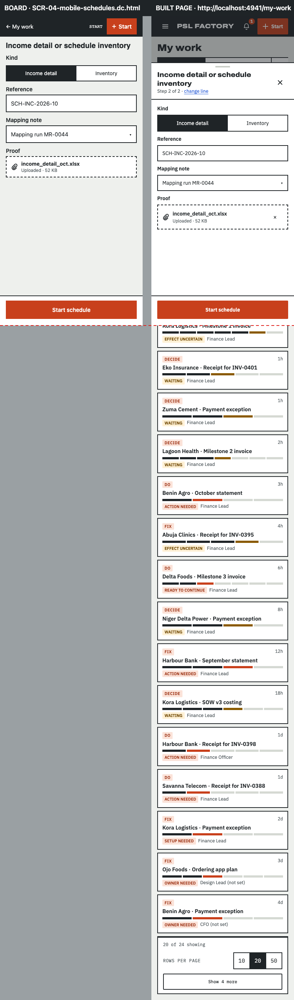
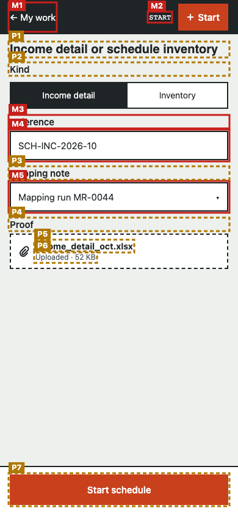
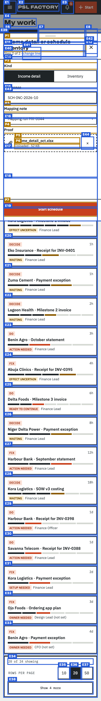
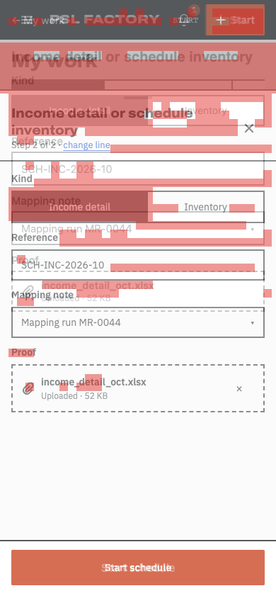

Does the built page follow the design?
Board SCR-04-mobile-schedules.dc.html compared with http://localhost:4941/my-work at 390px wide · 2026-11-18T08:08:14.131Z
- Every board item is on the page or approved as an exception (100%).
- Visual match 75.3 is below 90.
- 7 item(s) are in a different place; review them (not part of the pass rule unless --strict-position).
8 of 13 things drawn on the board were found on the page: headings, buttons, links, search and filter controls, table columns, labels and the repeated rows (counted once, not per row).
How closely the shapes line up: blocks, bars, tables and text areas, compared in 12px squares over the top 844px. Different words in the same place still count as a match, so sample data does not lower the score.
Missing from the built page 5
Drawn on the board but not found on the page. Each one must be built, or approved as an exception.
| # | What | Text on the board | Where on the board | Exception |
|---|---|---|---|---|
| M1 | Link | ← My work | left, 6px down | approved Conflicts 8: the phone form is F-05's bottom sheet over My work (signed 14 Nov for F-05), so the board's page bar "← My work · START" is not drawn. · builder proposal, pending design engineer |
| M2 | Text | START | right, 21px down | approved Conflicts 8: the phone board's page bar title; the bottom sheet head reads "Step 2 of 2 · change line" instead (F-05). · builder proposal, pending design engineer |
| M3 | Text | Reference | middle, 190px down | approved Conflicts 8: a native input's label is matched by the control it names (F-05 as signed), not as loose text. · builder proposal, pending design engineer |
| M4 | Text | SCH-INC-2026-10 | middle, 214px down | approved Conflicts 8: text inside a form control is matched by its control, not as page text (F-05 as signed); the value comes from the fixture or what the driver typed. · builder proposal, pending design engineer |
| M5 | Text | Mapping run MR-0044 ▾ | middle, 298px down | approved Conflicts 8: text inside a form control is matched by its control, not as page text (F-05 as signed); the value comes from the fixture or what the driver typed. · builder proposal, pending design engineer |
In a different place 7
Found on both, but in a different order, side of the page, or area (for example inside the table frame instead of above it).
| # | What | How it moved |
|---|---|---|
| P1 | Heading Income detail or schedule inventory |
|
| P2 | Text Kind |
|
| P3 | Text Mapping note |
|
| P4 | Text Proof |
|
| P5 | Text income_detail_oct.xlsx |
|
| P6 | Text Uploaded · 52 KB |
|
| P7 | Link Start schedule |
|
Looks different 3
Found on both, but styled differently: table rows and cells, fonts, colours, underlines, outlines, corners. Not part of the score; check each one against the board.
| What | Difference |
|---|---|
| Link "Start" |
|
| Heading "Income detail or schedule inventory" |
|
| Link "Start schedule" |
|
On the page but not on the board 44
Built but not drawn. Some are expected (data, status lines); the rest need the design engineer to approve or remove them.
| # | What | Text on the page | Where on the page |
|---|---|---|---|
| E1 | Button | Menu | left, 6px down |
| E2 | Text | PSL FACTORY | middle, 15px down |
| E3 | Button | Alerts, 1 unread | right, 6px down |
| E4 | Heading | My work | left, 72px down |
| E5 | Tabs | My work | middle, 112px down |
| E6 | Tab | Needs me 24 | left, 114px down |
| E7 | Tab | Waiting on others 12 | middle, 114px down |
| E8 | Tab | Done 6 | right, 114px down |
| E9 | Tab | Unassigned 2 | right, 114px down |
| E10 | Search area | middle, 172px down | |
| E11 | Search box | Search | middle, 172px down |
| E12 | Filter | Filter | right, 172px down |
| E13 | tabpanel | Needs me | middle, 228px down |
| E14 | Link | DO Ikeja Retail · Planning budget 2m READY TO CONTINUE Finance Lead | middle, 228px down |
| E15 | Link | DO Ikeja Retail · Milestone 1 invoice 5m ACTION NEEDED Finance Lead | middle, 342px down |
| E16 | Link | DECIDE Coastal Freight · Milestone 2 invoice 15m WAITING Finance Lead | middle, 456px down |
| E17 | Link | DO Lagoon Health · Milestone 3 invoice 25m READY TO CONTINUE Finance Lead | middle, 570px down |
| E18 | Link | DECIDE Eko Insurance · Milestone 4 invoice 30m WAITING Finance Lead | middle, 684px down |
| E19 | Link | FIX Kora Logistics · Milestone 1 invoice 40m EFFECT UNCERTAIN Finance Lead | middle, 799px down |
| E20 | Link | DECIDE Eko Insurance · Receipt for INV-0401 1h WAITING Finance Lead | middle, 913px down |
| E21 | Link | DECIDE Zuma Cement · Payment exception 1h WAITING Finance Lead | middle, 1027px down |
| E22 | Link | DECIDE Lagoon Health · Milestone 2 invoice 2h WAITING Finance Lead | middle, 1141px down |
| E23 | Link | DO Benin Agro · October statement 3h ACTION NEEDED Finance Lead | middle, 1255px down |
| E24 | Link | FIX Abuja Clinics · Receipt for INV-0395 4h EFFECT UNCERTAIN Finance Lead | middle, 1369px down |
| E25 | Link | DO Delta Foods · Milestone 3 invoice 6h READY TO CONTINUE Finance Lead | middle, 1483px down |
| E26 | Link | DECIDE Niger Delta Power · Payment exception 8h WAITING Finance Lead | middle, 1597px down |
| E27 | Link | FIX Harbour Bank · September statement 12h ACTION NEEDED Finance Lead | middle, 1711px down |
| E28 | Link | DECIDE Kora Logistics · SOW v3 costing 18h WAITING Finance Lead | middle, 1825px down |
| E29 | Link | DO Harbour Bank · Receipt for INV-0398 1d ACTION NEEDED Finance Officer | middle, 1939px down |
| E30 | Link | DO Savanna Telecom · Receipt for INV-0388 1d ACTION NEEDED Finance Lead | middle, 2054px down |
| E31 | Link | FIX Kora Logistics · Payment exception 2d SETUP NEEDED Finance Lead | middle, 2168px down |
| E32 | Link | FIX Ojo Foods · Ordering app plan 3d OWNER NEEDED Design Lead (not set) | middle, 2282px down |
| E33 | Link | FIX Benin Agro · Payment exception 4d OWNER NEEDED CFO (not set) | middle, 2396px down |
| E34 | Text | 20 of 24 showing | middle, 2524px down |
| E35 | Option | 10 | middle, 2556px down |
| E36 | Option | 20 | right, 2556px down |
| E37 | Option | 50 | right, 2556px down |
| E38 | Button | Show 4 more | middle, 2612px down |
| E39 | dialog | Income detail or schedule inventory | middle, 126px down |
| E40 | Text | Step 2 of 2 · change line | middle, 196px down |
| E41 | Button | change line | left, 183px down |
| E42 | Button | Close | right, 159px down |
| E43 | Text field | Reference | middle, 352px down |
| E44 | Button | Remove income_detail_oct.xlsx | right, 526px down |
Pictures
The red dashed line on the side-by-side marks how far down the visual score looks. On the marked board, red boxes are missing items (M). On the marked page, amber boxes moved (P) and blue boxes are extra (E). In the difference picture both screens are laid over each other and red squares are where the shapes do not line up.






Notes about this run
- Images: /_blob/ images are served from /Users/Hunchoo/psl-factory-worktrees/f-47/design/mascots/canvas-assets.json (19 mapped).
- Fonts: Google Fonts could not be reached (fonts.googleapis.com); the board was drawn with fallback fonts, so text widths may differ slightly. The run continues.
Found on both (8)
| Link | Start | page: Start work |
| Heading | Income detail or schedule inventory | |
| Text | Kind | |
| Text | Mapping note | |
| Text | Proof | |
| Text | income_detail_oct.xlsx | |
| Text | Uploaded · 52 KB | |
| Link | Start schedule |
How the scores are worked out
Element coverage. The board is drawn locally from its own template and sample data. From the drawn board the check lists everything a person sees or uses: page areas (navigation, main, search), headings, links, buttons, form fields with their labels, table column headers, filter, search and pagination controls and fixed labels. Rows drawn from sample data count once, as a pattern ("table rows with these columns"). Each item is looked for on the page by its kind and its words (ignoring capitals, curly quotes and small wording differences, at least 80% similar). Coverage is found ÷ drawn. Order is compared in reading order (top to bottom, left to right); an item is "moved" when it breaks the order, sits on the other side of the page, or sits inside a different area.
Visual match. Both full-page screenshots are compared in 12px squares after a light blur, over the board's height (844px; the page is 2684px). Only squares with something in them count. A square matches when its colours line up, or when both have text or lines there. Score = matching ÷ counted squares (1726 of 2293). Over every square including empty background it would be 75.8.
Technical details
Board file: /Users/Hunchoo/psl-factory-worktrees/f-47/design/canvas/project/SCR-04-mobile-schedules.dc.html
Viewport: 390×844
Report data: report.json
Exceptions file: /Users/Hunchoo/psl-factory/delivery/features/F-47/fidelity-exceptions.json